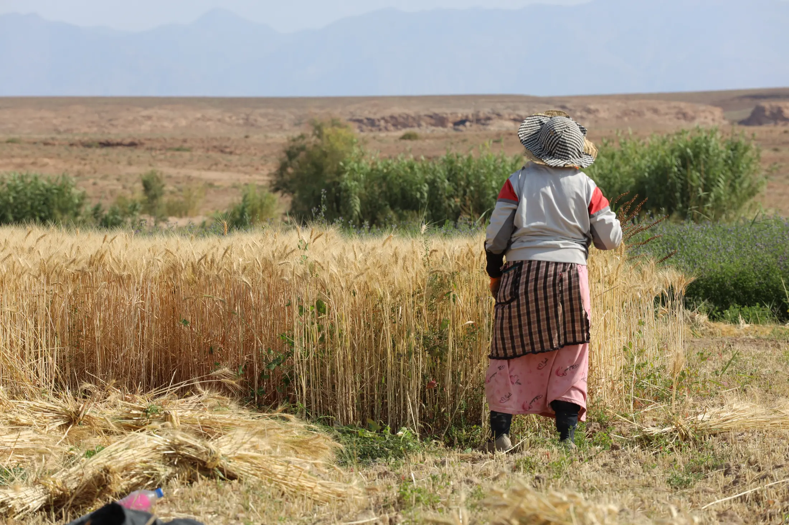
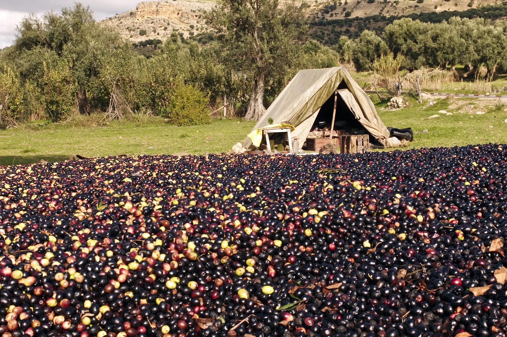

Demande de financement
Les entreprises membres peuvent solliciter un financement pour un diagnostic stratégique ou une étude d’ingénierie de formation.


Composition du dossier
- FG01Formulaire de demande de financement, dûment complété
- CSFAttestation d'éligibilité aux Contrats Spéciaux de Formation
- Attestation bancaire de l'entreprise
- G02Fiche de renseignements sur l'entreprise
- G03Fiche de renseignements de l'organisme de conseil
- G04Fiche technique de l'étude
- G05Déclaration sur l'honneur : organisme externe, sans lien organique ou familial, et absence de financement concurrent
- G06Déclaration sur l'honneur attestant la réalisation du plan de formation de l'année n-1 (entreprises ayant déjà bénéficié d'un financement GIAC pour une IF)
- G07Proposition technique et financière de l'organisme de conseil
- RCCopie du registre de commerce de l'entreprise
- CSFÉligibilité au CSF de l'organisme de conseil
- Frais de dossier de 3 000,00 DH
Études réalisées en tiers payant
- Demande de bénéfice du tiers payant
- Attestation de qualification du cabinet conseil en cours de validité
- Attestation bancaire du cabinet conseil
Le dossier incomplet ne pourra être pris en compte dans le processus d'instruction.
Après l’accord du comité
- Retourner le contrat de financement signé au GIAC dans un délai maximum de quinze jours calendaires suivant sa réception.
- Transmettre un avis de réalisation au moins vingt-quatre heures avant la date effective de démarrage de l'étude.
Le non-respect de ces délais peut entraîner la caducité de la décision d’accord de financement.